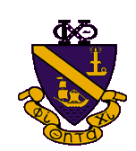
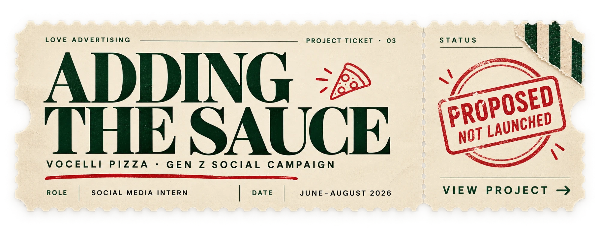

Projects
A collection of creative strategy, visual design, and social content built to connect audiences and strengthen brands.
Welcome to Westworld
USC · Los Angeles
USC Zeher
Social media · Graphic design · Content creation
A multi-year social and visual-content strategy for USC's premier Bollywood fusion dance team — spanning recruitment, event promotion, and short-form video.
View project
Social Media · Graphic Design · Brand Systems
Phi Chi Theta at USC
A social-graphics system for USC's professional business fraternity — built for recruitment, member engagement, and consistent chapter branding.
View project